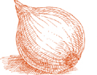
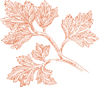

Определение ризотто  Техника ризотто использует необычные свойства некоторых итальянских сортов риса, зерно которых окружено мягким крахмалом, известным как амилопектин. Когда он подвергается соответствующему методу приготовления, этот крахмал растворяется, кремообразно связывая зерна вместе и одновременно объединяя их с овощами, мясом, рыбой или другими ингредиентами в ароматической основе. Полученное блюдо — это ризотто.
Техника ризотто использует необычные свойства некоторых итальянских сортов риса, зерно которых окружено мягким крахмалом, известным как амилопектин. Когда он подвергается соответствующему методу приготовления, этот крахмал растворяется, кремообразно связывая зерна вместе и одновременно объединяя их с овощами, мясом, рыбой или другими ингредиентами в ароматической основе. Полученное блюдо — это ризотто.
Ароматическая основа Практически все съедобное может стать ароматической основой для ризотто: сыр, рыба, мясо, овощи, бобовые, даже фрукты. Такие ингредиенты обычно добавляются для того, чтобы внести больше аромата, чем текстуры, аромат, который должен быть связан с рисом, пока мягкий крахмал зерен растворяется в процессе специального приготовления.
В большинстве случаев ингредиенты основы добавляются до риса. Однако при приготовлении ризотто с пармезаном сыр добавляется на последнем этапе приготовления. Иногда может быть ингредиент, который необходимо защитить от переваривания. Наиболее очевидный пример — это моллюски или мидии. В этом случае соки морепродуктов должны быть извлечены заранее и включены в ароматическую основу с самого начала, в то время как мясо моллюсков можно добавить в рис, когда он почти готов.
Метод приготовления Ингредиенты ароматической основы ризотто обычно основываются на нарезанном луке, обжаренном на сливочном масле. В некоторых редких случаях оливковое масло заменяет сливочное масло, и может быть добавлен чеснок.
Сырой, немытый итальянский рис добавляется в горячую основу из масла или масла, и слегка обжаривается в ней. Сразу после этого в кастрюлю добавляется черпак жидкости для приготовления. Рис помешивается до тех пор, пока жидкость не исчезнет, частично за счет впитывания, частично за счет испарения. Добавляется больше жидкости, и процедура повторяется, пока рис не будет готов.
Только благодаря постепенному добавлению небольших количеств жидкости, через одновременное впитывание и испарение, и постоянное помешивание, мягкий крахмал риса превращается в связывающий агент, соединяя зерна и фиксируя на них вкус ароматической основы. Рис, который не помешивается, который тушится в слишком большом количестве жидкости, который готовится в закрытой кастрюле, может превратиться в вполне приятное блюдо, но это не ризотто, и не будет иметь вкус ризотто.
Жидкость для приготовления Все ароматы, с которыми начинается жидкость для приготовления, становятся более концентрированными и интенсивными по мере ее испарения. Учитывая это, когда в рецепте требуется бульон, вы будете использовать хороший, мягкий мясной бульон, приготовленный в основном из говядины и телятины, с почти без костей и очень мало курицы. Чистый куриный бульон становится слишком резким, и так же ведет себя бульон, приготовленный по французскому методу. Ни один из них не является желаемым средством для приготовления ризотто.
Вода — лучший выбор для морепродуктов ризотто. Рыбные фуметы, или бульоны, обогащенные раковинами, становятся слишком резкими по мере их приготовления, тем самым нарушая баланс вкусов ризотто.
Жидкости, которые выделяются из ингредиентов ароматической основы, должны быть сохранены, такие как соки, выделяемые моллюсками или мидиями, вода, используемая для восстановления сушеных грибов, и жидкость с овощным вкусом, оставшаяся от предварительного бланширования спаржи или других зеленых овощей.
Вино может быть добавлено, но оно не должно быть единственной используемой жидкостью.
Примечание Количество жидкости, предложенное в следующих рецептах, является приблизительным. В реальной готовке вы должны быть готовы использовать больше или иногда меньше, в зависимости от того, сколько требуется ризотто. При приготовлении с бульоном, если вы использовали бульон до того, как рис полностью приготовился, продолжайте с водой.
Сколько времени готовить Некоторые итальянские повара предпочитают, чтобы зерна в ризотто были особенно твердыми, и предлагают время приготовления от 1от 8 до 20 минут. На этом этапе центр зерна остается мелкопесчаным. Если вам не нравится мелкопесчаное ощущение, как и мне, ожидайте готовить рис еще 5–10 минут, в общей сложности от 25 минут до получаса.
Темп, с которым готовится ризотто, может значительно варьироваться. Он зависит от восприимчивости к влаге конкретного риса, который вы используете, от количества жидкости, которое вы добавляете за раз, от скорости, с которой жидкость испаряется.
Разумно начинать пробовать рис после 20 минут приготовления, чтобы вы могли начать оценивать, сколько времени ему еще нужно, и сколько жидкости вам потребуется. Никогда не готовьте рис до тех пор, пока он не станет мягким в центре. Он должен быть нежным, но все еще твердым на вкус.
Кастрюля Она должна передавать и удерживать достаточное количество тепла, чтобы готовить рис на очень быстром огне, не подгорая. Чистый алюминий и другие легкие посуды не подходят. Кастрюли с толстым дном из стальных сплавов являются самыми прочными и практичными для профессиональной кухни, но для домашнего использования эмалированная чугунная кастрюля доставляет удовольствие в работе.
Сорта риса Импортированные итальянские сорта — единственные, на которые можно положиться для полностью успешного ризотто. Из множества выращиваемых сортов лучшими являются Арборио, Вьалоне Нано и Карнароли. См. раздел об ингредиентах для подробного описания их индивидуальных характеристик.
Стили ризотто Все ризотто можно сгруппировать на два основных стиля, которые различаются по консистенции. Существует компактный, более плотно связанный, несколько липкий стиль Пьемонта, Ломбардии и Эмилии-Романьи и более рыхлый, жидкий стиль Венеции, известный как all’onda, “волнистый.” Первый достигается путем испарения всей жидкости для приготовления по мере завершения готовки риса, а второй — путем доведения риса до желаемой степени готовности, пока он все еще довольно влажный.
Пьемонтский/миланский/болонский стиль более совместим с насыщенными вкусовыми основами, основанными на сыре, колбасах, дичи и диких грибах, тогда как венецианское ризотто all’onda достигает большой деликатности с морепродуктами и весенними овощами.
Температура подачи Среди мифов, связанных с ризотто, есть мнение, что его нужно есть горячим, как только он выходит из кастрюли. В отличие от пасты, ризотто вкуснее, когда он немного постоит на вашей тарелке. Когда итальянцам подают ризотто, они часто распределяют его по тарелке от центра к краям, чтобы рассеять часть пара.

ЭТО БАЗОВОЕ белое ризотто — самый простой способ приготовления блюда и для многих — самый изысканный. Насколько оно хорошо, оно может быть еще лучше, когда его покрывают стружками белых трюфелей.
На 6 порций
5 чашек Основного домашнего мясного бульона, ИЛИ 1 чашка консервированного говяжьего бульона, разбавленного 4 чашками воды
3 столовые ложки масла
2 столовые ложки растительного масла
2 столовые ложки лука, очень мелко нарезанного
2 чашки риса Арборио ИЛИ другого импортного итальянского ризотто
½ чашки свеженатертого сыра пармиджано-реджано
ПО ЖЕЛАНИЮ: ½ унции (или больше, если позволяет бюджет) свежего ИЛИ консервированного белого трюфеля
Соль, если необходимо
1. Доведите бульон до очень медленного, постоянного кипения на конфорке рядом с тем местом, где вы будете готовить ризотто.
2. Положите 1 столовую ложку масла, растительное масло и нарезанный лук в широкую, прочную кастрюлю и включите средний огонь. Готовьте и помешивайте лук, пока он не станет прозрачным, затем добавьте рис. Быстро и тщательно перемешивайте, пока зерна не покроются маслом.
3. Добавьте ½ чашки кипящего бульона и готовьте рис, постоянно помешивая длинной деревянной ложкой, очищая стенки и дно кастрюли по мере помешивания, пока вся жидкость не испарится. Вы никогда не должны прекращать помешивание, и необходимо часто очищать дно кастрюли, иначе рис прилипнет.
4. Когда в кастрюле не останется жидкости, добавьте еще ½ чашки, продолжая всегда помешивать, как описано выше. Поддерживайте огонь на активном уровне.
5. Начните пробовать рис через 20 минут готовки. Он готов, когда становится мягким, но упругим при укусе. По мере приближения к этому состоянию постепенно уменьшайте количество добавляемой жидкости, так чтобы, когда он будет полностью готов, он был слегка влажным, но не жидким.
6. Когда рис будет готов через 1 или 2 минуты, добавьте весь тертый пармезан и оставшееся масло. Постоянно помешивайте, чтобы расплавить сыр и обернуть его вокруг зерен. Снимите с огня, попробуйте и при необходимости добавьте соль, помешивая после добавления соли.
7. Переложите на тарелку и подавайте немедленно. Натрите по желанию белый трюфель сверху, используя либо трюфельницу, либо овощечистку с вращающимся лезвием. Некоторые предпочитают натирать трюфель на каждую отдельную порцию.

На 6 порций
5 чашек Основной домашний мясной бульон, ИЛИ 1 чашка консервированного говяжьего бульона, разбавленного 4 чашками воды
2 столовые ложки нарезанного говяжьего мозга, панчета или прошутто
3 столовые ложки масла
2 столовые ложки растительного масла
2 столовые ложки очень мелко нарезанного лука
2 чашки риса арборио или другого импортного итальянского ризотто
⅓ чайной ложки порошка шафрана ИЛИ ½ чайной ложки нарезанных нитей шафрана, растворенных в 1 чашке горячего бульона или воды
Черный перец, свежемолотый
⅓ чашки свеженатертого пармиджано-реджано сыра, плюс дополнительный сыр на столе
Соль, если требуется
1. Доведите бульон до очень медленного, постоянного кипения на конфорке рядом с тем местом, где вы будете готовить ризотто.
2. Положите нарезанный мозг, панчетту или прошутто, 1 столовую ложку масла, растительное масло и нарезанный лук в широкую, прочную кастрюлю и включите средний огонь. Готовьте и помешивайте лук, пока он не станет прозрачным, затем добавьте рис. Быстро и тщательно перемешивайте, пока зерна не покроются маслом.
3. Добавьте ½ чашки кипящего бульона и готовьте рис, следуя инструкциям в Шагах 3 и 4 основного белого ризотто.
4. Когда рис будет готовиться 15 минут, добавьте половину растворенного шафрана. Продолжайте помешивать, и когда в кастрюле не останется жидкости, добавьте оставшийся шафран.
5. Завершите приготовление риса, постоянно помешивая, пока он не станет мягким, но упругим, и в кастрюле не останется жидкости.
6. Снимите с огня, добавьте несколько щепоток перца, оставшееся масло, весь натертый пармезан и тщательно перемешайте, пока сыр не растает и не прилипнет к рису. Попробуйте и при необходимости добавьте соль. Переложите на блюдо и подавайте немедленно с дополнительным натертым сыром сбоку.

На 6 порций
5 чашек Основного домашнего мясного бульона, ИЛИ 1 чашка консервированного говяжьего бульона, разбавленного 4 чашками воды
2 столовые ложки сливочного масла
2 столовые ложки растительного масла
2 столовые ложки лука, очень мелко нарезанного
2 чашки риса арборио или другого импортного итальянского риса для ризотто
Небольшой пакетик ИЛИ 1 унция сушеных грибов порчини, восстановленных
Фильтрованная вода от замачивания грибов
Черный перец, свежемолотый
⅓ чашки свеженатертого сыра пармиджано-реджано, плюс дополнительный сыр на столе
Соль, если требуется
1. Доведите бульон до очень медленного, постоянного кипения на конфорке рядом с тем местом, где вы будете готовить ризотто.
2. Положите 1 столовую ложку сливочного масла, растительное масло и нарезанный лук в широкую, прочную кастрюлю и включите средний огонь. Готовьте и помешивайте лук, пока он не станет прозрачным, затем добавьте рис. Быстро и тщательно перемешивайте, пока зерна не покроются маслом.
3. Добавьте ½ чашки кипящего бульона и готовьте рис, следуя инструкциям в Шагах 3 и 4 основного рецепта белого ризотто.
4. Когда рис будет готовиться 10 минут, добавьте восстановленные грибы и ½ от их отфильтрованной воды. Продолжайте помешивать, и когда жидкости больше не останется, добавьте еще грибной воды, помешивая, позволяя ей испаряться и добавляя еще, пока не используете всю воду.
5. Завершите приготовление риса с бульоном или, если бульона больше нет, с водой. Готовьте рис, пока он не станет мягким, но упругим на вкус, и в кастрюле не останется жидкости.
6. Снимите с огня, добавьте несколько щепоток перца, оставшуюся 1 столовую ложку сливочного масла и весь тертый пармезан, и тщательно перемешайте, пока сыр не растает и не прилипнет к рису. Попробуйте и при необходимости добавьте соль. Переложите на блюдо и подавайте немедленно с дополнительным тертым сыром сбоку.

На 6 порций
450 г свежего аспарагуса
Соль
Достаточно Основного домашнего мясного бульона, ИЛИ консервированного говяжьего бульона, разбавленного водой, чтобы получить не менее 1.5 литра жидкости для приготовления, когда добавите к воде, использованной для бланширования аспарагуса
3 столовые ложки сливочного масла
2 столовые ложки растительного масла
2 столовые ложки очень мелко нарезанного лука
2 чашки риса арборио или другого импортного итальянского ризотто
Черный перец, свежемолотый
¼ чашки свеженатертого сыра пармиджано-реджано
1 столовая ложка очень мелко нарезанной петрушки
1. Отрежьте 1 дюйм (2.5 см) или больше от основания спаржи, чтобы обнажить влажную часть каждого стебля, затем очистите спаржу и промойте ее.
2. Выберите кастрюлю, в которую поместится вся спаржа, лежащая горизонтально. Налейте достаточно воды, чтобы она поднялась на 5 см по бокам кастрюли, и добавьте 1 столовую ложку соли. Включите средний огонь, и когда вода закипит, опустите спаржу и накройте кастрюлю. Готовьте 4–5 минут после повторного закипания воды, в зависимости от свежести и толщины стеблей. Слейте спаржу, когда она станет мягкой, но все еще упругой, не выбрасывая воду. Отложите в сторону, чтобы остыла.
3. Когда спаржа остынет, отрежьте кончики стеблей примерно на 3–4 см от верхушки и отложите, а остальные стебли нарежьте на кусочки по 1.5 см, выбрасывая любые части основания, которые кажутся особенно жесткими и волокнистыми.
4. Добавьте достаточно бульона в воду для бланширования спаржи, чтобы получить около 6 чашек, и доведите до очень медленного, постоянного кипения на конфорке рядом с той, на которой вы будете готовить ризотто.
5. Положите 1 столовую ложку масла, растительное масло и нарезанный лук в широкую, прочную кастрюлю, включите средний огонь и готовьте лук, помешивая, пока он не станет прозрачным. Добавьте нарезанные стебли спаржи, но не кончики. Готовьте минуту или около того, тщательно помешивая, чтобы хорошо покрыть спаржу.
6. Добавьте рис, быстро и тщательно помешивая, пока зерна не покроются. Добавьте ½ чашки кипящего бульона и воды от спаржи, и готовьте рис, следуя указаниям в Шагах 3 и 4 основного рецепта белого ризотто.
7. Готовьте рис, пока он не станет мягким, но упругим на вкус, с едва достаточным количеством жидкости, чтобы консистенция была слегка жидкой. Снимите с огня, добавьте отложенные кончики спаржи, несколько щепоток перца, оставшиеся 2 столовые ложки масла и весь тертый пармезан, и тщательно перемешайте, пока сыр не растает и не прилипнет к рису. Попробуйте и при необходимости добавьте соль. Вмешайте нарезанную петрушку. Переложите на блюдо и подавайте немедленно.
КОГДА РАБОТАЕТЕ с этим рецептом, не выбрасывайте все листовые верхушки сельдерея, потому что некоторые будут готовиться с ризотто с самого начала, чтобы подчеркнуть аромат сельдерея. Часть стебля добавляется позже, чтобы сохранить некоторый текстурный интерес.
На 6 порций
5 чашек Основного домашнего мясного бульона, ИЛИ 1 чашка консервированного говяжьего бульона, разбавленного 4 чашками воды
3 столовые ложки масла
2 столовые ложки растительного масла
½ чашки нарезанного лука
2 чашки нарезанного очень мелко стебля сельдерея
1 столовая ложка нарезанных листовых верхушек сердцевины сельдерея
Соль
2 чашки риса ризотто Арборио или другого импортного итальянского
Черный перец, свежемолотый
⅓ чашки свеженатертого сыра пармиджано-реджано
1 столовая ложка нарезанной петрушки
1. Доведите бульон до очень медленного, постоянного кипения на конфорке рядом с тем местом, где будете готовить ризотто.
2. Положите 2 столовые ложки сливочного масла, растительное масло и нарезанный лук в широкую, прочную кастрюлю, включите средний огонь. Готовьте и помешивайте лук, пока он не станет прозрачным, затем добавьте половину нарезанного сельдерея, все нарезанные листья и щепотку соли. Готовьте 2-3 минуты, часто помешивая, чтобы хорошо покрыть сельдерей.
3. Добавьте рис, быстро и тщательно помешивая, пока зерна не покроются. Добавьте ½ чашки кипящего бульона и готовьте рис, следуя инструкциям в Шагах 3 и 4 основного рецепта белого ризотто.
4. Когда рис варился 10 минут, добавьте оставшуюся нарезанную сельдерей, и продолжайте помешивать, добавляя бульон по мере необходимости, понемногу.
5. Варите рис до мягкости, но так, чтобы он оставался упругим, с едва достаточным количеством жидкости, чтобы консистенция была слегка жидкой. Снимите с огня, добавьте несколько щепоток перца, оставшуюся 1 столовую ложку масла и весь тертый пармезан, и тщательно перемешайте, пока сыр не растает и не прилипнет к рису. Попробуйте и при необходимости добавьте соль. Вмешайте нарезанную петрушку. Переложите на блюдо и подавайте сразу.
На 6 порций
4 средних или 6 маленьких цукини
2 столовые ложки растительного масла
3 столовые ложки лука, крупно нарезанного
½ чайной ложки чеснока, очень мелко нарезанного
Соль
5 чашек Основного домашнего мясного бульона, ИЛИ 1 чашка консервированного говяжьего бульона, разбавленного 4 чашками воды
2 столовые ложки масла
2 чашки риса арборио или другого импортного итальянского риса для ризотто
Черный перец, свежемолотый
¼ чашки свеженатертого сыра пармиджано-реджано, плюс дополнительный сыр на столе
1 столовая ложка нарезанной петрушки
1. Замочите цуккини в холодной воде, тщательно очистите их и отрежьте оба конца. Нарежьте очищенные цуккини кружочками толщиной 1.25 см.
2. Положите все растительное масло и нарезанный лук в широкую, прочную кастрюлю и включите средний огонь. Готовьте и помешивайте лук, пока он не станет прозрачным, затем добавьте нарезанный чеснок. Когда чеснок слегка подрумянится, добавьте нарезанные цуккини и уменьшите огонь до среднего. Готовьте около 10 минут, периодически переворачивая цуккини, затем добавьте щепотку соли. Продолжайте готовить, пока цуккини не станут золотистыми, еще примерно 15 минут.
3. Доведите бульон до очень медленного, постоянного кипения на конфорке рядом с той, на которой вы будете готовить ризотто.
4. Добавьте 1 столовую ложку масла к цуккини и включите сильный огонь. Добавьте рис, быстро и тщательно помешивая, пока зерна не покроются маслом.
5. Добавьте ½ чашки кипящего бульона и готовьте рис, следуя инструкциям в Шагах 3 и 4 базового рецепта белого ризотто.
6. Готовьте рис, пока он не станет мягким, но при этом упругим, с едва достаточным количеством жидкости, чтобы консистенция была слегка жидкой. Снимите с огня, добавьте несколько щепоток перца, оставшуюся столовую ложку масла и весь натертый пармезан, и тщательно перемешайте, пока сыр не растает и не прилипнет к рису. Попробуйте и при необходимости добавьте соль. Вмешайте нарезанную петрушку. Переложите на тарелку и подавайте немедленно с тертым пармезаном на стороне.
Заметка заранее Рецепт можно приготовить за несколько часов или на день-два заранее до этого момента. Если продолжаете в тот же день, не refrigerate цуккини. При хранении в холодильнике, храните плотно накрытыми пленкой.
На 6 порций
1 средний или 2 маленьких цуккини
5 чашек Основного домашнего мясного бульона, ИЛИ 1 чашка консервированного говяжьего бульона, разбавленного 4 чашками воды
3 столовые ложки масла
2 столовые ложки растительного масла
⅓ чашки нарезанного лука
⅓ чашки моркови, нарезанной очень мелко
⅓ чашки сельдерея, нарезанного очень мелко
Соль
2 чашки риса ризотто сорта Арборио или другого импортного итальянского риса
½ чашки свежего молодого горошка ИЛИ размороженного замороженного горошка
1 спелый, твердый, свежий помидор, очищенный сырым овощечисткой, без семян и нарезанный мелко
⅓ чашки свеженатертого пармиджано-реджано сыра
6 или более свежих листьев базилика, промытых и нарезанных вручную
1. Замочите цуккини в холодной воде, тщательно промойте их и отрежьте оба конца. Нарежьте их очень мелко.
2. Доведите бульон до очень медленного, постоянного кипения на конфорке рядом с тем местом, где вы будете готовить ризотто.
3. Положите 2 столовые ложки сливочного масла, все растительное масло и нарезанный лук в широкую, прочную кастрюлю, включите средний огонь и готовьте лук, пока он не станет золотисто-коричневым.
4. Добавьте нарезанную морковь и сельдерей, и готовьте около 5 минут, время от времени помешивая, чтобы они хорошо покрылись. Добавьте нарезанные цуккини, одну-две щепотки соли и готовьте еще 8 минут, периодически помешивая.
5. С помощью шумовки или ложки с отверстиями удалите половину овощей из кастрюли и отложите в сторону. Включите сильный огонь. Добавьте рис, быстро и тщательно помешивая, пока зерна не покроются. Если используете свежий горошек, добавьте его сейчас.
6. Добавьте ½ чашки кипящего бульона и готовьте рис, следуя указаниям в Шагах 3 и 4 основного рецепта белого ризотто.
7. Когда рис будет готов в течение 20–25 минут, добавьте приготовленные овощи, которые вы отложили ранее, нарезанный кубиками помидор и размороженный замороженный горошек, если не используете свежий. Готовьте рис, пока он не станет мягким, но упругим на вкус, с едва достаточным количеством жидкости, чтобы консистенция была слегка жидкой. Снимите с огня, добавьте оставшуюся столовую ложку масла и весь тертый пармезан, и тщательно перемешайте, пока сыр не растает и не прилипнет к рису. Попробуйте и при необходимости добавьте соль. Вмешайте нарезанный базилик. Переложите на блюдо и подавайте немедленно.
Паниссия — это слияние двух сытных блюд: ризотто, приготовленного с красным вином, и щедро наполненного минестроне, могучего овощного супа из Новары.
В Новаре одним из ингредиентов блюда является мягкий салями из ослиного мяса, salam d’la duja. В качестве замены ищите качественный, нежный салями, который не слишком острый и не слишком чесночный. Чтобы максимально приблизиться к оригинальному характеру la paniscia, вино должно быть хорошим пьемонтским красным, Спанна, отличным Барберой или Дольчетто. Если вы не можете их найти, ищите хорошее Зинфандель, Шираз или Кот-дю-Рон.
На 6 порций
¼ чашки растительного масла
3 столовые ложки нарезанного лука
¼ чашки нежного, мягкого салями, мелко нарезанного (см. предварительные замечания выше)
2 чашки риса ризотто сорта Арборио или другого импортного итальянского риса
2 чашки сухого красного вина (см. предварительные замечания выше)
2½ чашки Супа с фасолью и овощами из Новары.
1 столовая ложка масла
Черный перец, свежемолотый
Соль
Свеженатертый сыр пармиджано-реджано на столе
1. Положите все растительное масло, нарезанный лук и салями в широкую, прочную кастрюлю, включите средний огонь и готовьте, время от времени помешивая, пока лук не станет золотисто-коричневым.
2. Добавьте рис, быстро и тщательно помешивая, пока зерна не покроются маслом. Добавьте ½ чашки вина и готовьте рис, следуя инструкциям в Шагах 3 и 4 основного рецепта белого ризотто. При необходимости добавляйте больше вина, по чуть-чуть. Когда вино закончится, переключитесь на теплую воду.
3. Когда рис будет готов в течение 15 минут, добавьте бобовую и овощную суп, тщательно перемешивая. Продолжайте готовить рис, добавляя по полчашки воды за раз, постоянно помешивая. Готовьте рис до мягкости, но чтобы он оставался твердым на вкус, с едва достаточным количеством жидкости, чтобы консистенция была немного жидкой. Снимите с огня, добавьте столовую ложку масла и несколько щедрых порций перца, попробуйте и при необходимости добавьте соль, хорошо перемешайте и переложите на сервировочное блюдо. Дайте постоять несколько минут, затем подавайте с тертым пармезаном на стороне.
На 6 порций
3 дюжины моллюсков литтлнек, самые маленькие, которые вы можете найти
1 столовая ложка мелко нарезанного лука
5 столовых ложек оливкового масла первого холодного отжима
2 чайные ложки мелко нарезанного чеснока
2 столовые ложки нарезанной петрушки
2 чашки риса ризотто сорта Арборио или другого импортного итальянского
⅓ чашки сухого белого вина
Мелко нарезанный острый красный перец по вкусу
Соль
Черный перец, свежемолотый
1. Промойте и очистите моллюсков. Выбросьте те, которые остаются открытыми при обработке. Положите их в сковороду, достаточно широкую, чтобы моллюски не были сложены более чем в 3 слоя, накройте сковороду и включите сильный огонь. Часто проверяйте моллюсков, переворачивая их и убирая из сковороды по мере открытия раковин.
2. Когда все моллюски откроются, отделите их мясо от раковин и, если они не слишком маленькие, нарежьте его на 2 или даже 3 части. Положите мясо моллюсков в миску и накройте его собственным соком из сковороды. Чтобы убедиться, что песок остался позади, наклоните сковороду и аккуратно черпайте жидкость сверху.
3. Дайте моллюскам отдохнуть 20 или 30 минут, чтобы они сбросили песок, который все еще может прилипать к мясу, затем аккуратно достаньте их с помощью шумовки. Уберите в небольшую миску. Выстелите сито бумажными полотенцами и процедите сок моллюсков через бумагу в отдельную миску.
4. Доведите 5 чашек воды до очень медленного, постоянного кипения на конфорке рядом с тем местом, где вы будете готовить ризотто.
5. Положите нарезанный лук и 3 столовые ложки оливкового масла в широкую, прочную кастрюлю и включите средний огонь. Готовьте и помешивайте лук, пока он не станет прозрачным, затем добавьте чеснок. Когда он приобретет светло-золотистый цвет, добавьте 1 столовую ложку петрушки, перемешайте, затем добавьте рис. Быстро и тщательно перемешивайте в течение 15 или 20 секунд, пока зерна хорошо не покроются.
6. Добавьте вино и готовьте рис, следуя инструкциям в Шагах 3 и 4 основного рецепта белого ризотто. Когда все вино испарится, добавьте процеженные соки моллюсков, и когда они испарятся, продолжайте с водой, которую вы держите на медленном огне, добавляя по ½ чашки за раз по мере необходимости. В любой момент, пока рис готовится, добавьте нарезанный острый перец чили, соль и несколько щепоток черного перца.
7. Готовьте рис, пока он не станет мягким, но упругим на вкус, с едва достаточным количеством жидкости, чтобы консистенция была слегка жидкой. Добавьте моллюсков, оставшуюся столовую ложку петрушки и оставшиеся 2 столовые ложки оливкового масла, тщательно перемешивая с ризотто. Переложите на тарелку и подавайте немедленно.
Заметка заранее Шаги выше могут быть выполнены за 2 или 3 часа до подачи. При этом полейте немного процеженного сока на мясо моллюсков, чтобы оно оставалось влажным.

На 6 порций
5 чашек Основного домашнего мясного бульона, ИЛИ 1 чашка консервированного говяжьего бульона, разбавленного 4 чашками воды
3 столовые ложки масла
3 столовые ложки панчетты, очень мелко нарезанной
1½ чайные ложки чеснока, очень мелко нарезанного
Нарезанные листья розмарина, 1½ чайные ложки, если свежие, ¾ чайной ложки, если сушеные
Нарезанные листья шалфея, 2 чайные ложки, если свежие, 1 чайная ложка, если сушеные
¼ фунта (около 110 г) говяжьего фарша
Соль
Черный перец, свежемолотый
1⅓ чашки вина Бароло (см. примечание ниже)
2 чашки риса ризотто сорта Арборио или другого импортного итальянского риса
⅓ чашки свеженатертого сыра пармиджано-реджано, плюс дополнительный сыр на столе
1. Доведите бульон до очень медленного, постоянного кипения на конфорке рядом с тем местом, где вы будете готовить ризотто.
2. Положите 1 столовую ложку масла, панчету и чеснок в широкую, прочную кастрюлю, включите средний огонь и время от времени помешивайте во время готовки. Когда чеснок станет очень светло-золотистым, добавьте розмарин и шалфей, готовьте и помешивайте несколько секунд, затем добавьте фарш. Разомните мясо вилкой и переворачивайте несколько раз, чтобы подрумянить и хорошо покрыть его, добавляя соль и щедрую порцию перца.
3. Когда мясо хорошо подрумянится, добавьте 1 чашку красного вина. Готовьте на медленном огне, позволяя вину выпариться, пока оно не останется в виде пленки на дне кастрюли.
4. Увеличьте огонь и добавьте рис. Быстро и тщательно перемешивайте, пока зерна не покроются равномерно.
5. Добавьте ½ чашки кипящего бульона и готовьте рис, следуя указаниям в Шагах 3 и 4 основного рецепта белого ризотто. Когда рис почти готов, но все еще довольно твердый, примерно через 25 минут, добавьте оставшееся вино и завершите готовку, постоянно помешивая, пока все вино не испарится.
6. Снимите с огня, добавьте 2 столовые ложки масла и тертый пармезан, и тщательно перемешайте, переворачивая ризотто до тех пор, пока сыр не распределится равномерно и не растает. Попробуйте и при необходимости добавьте соль. Переложите на блюдо и подавайте немедленно, с дополнительным тертым сыром на стороне.
Примечание Бароло, возможно, величайшее красное вино Италии и, безусловно, самое глубокое по вкусу, можно удовлетворительно заменить в этом блюде его ближайшим родственником, Барбареско. Для других замен смотрите вина, полученные из того же характерного сорта винограда неббиоло, такие как Гаттинары, Спанна, Карема или Сфурсат. Вы можете попробовать и другие красные вина, и хотя вы вполне можете сделать отличное ризотто с ними, это не будет это ризотто.
На 6 порций
5 чашек Основного домашнего мясного бульона, ИЛИ 1 чашка консервированного говяжьего бульона, разбавленного 4 чашками воды
1¼ чашки Мясного соуса по-болонски
2 чашки риса арборио или другого импортного итальянского ризотто
1 столовая ложка масла
¼ чашки свеженатертого сыра пармиджано-реджано, плюс дополнительный сыр на столе
Соль, если требуется
1. Доведите бульон до очень медленного, постоянного кипения на конфорке рядом с тем местом, где вы будете готовить ризотто.
2. Положите мясной соус в широкую, прочную кастрюлю, включите средний огонь и доведите до постоянного, легкого кипения. Добавьте рис и тщательно перемешивайте около 1 минуты, пока зерна хорошо не покроются соусом.
3. Добавьте ½ чашки кипящего бульона и готовьте рис, следуя указаниям в Шагах 3 и 4 основного рецепта белого ризотто.
4. Завершите приготовление риса с бульоном или, если бульона больше нет, с водой. Готовьте рис до мягкости, но чтобы он оставался упругим, без жидкости в кастрюле.
5. Снимите с огня, добавьте столовую ложку масла и весь натертый пармезан, тщательно перемешайте, пока сыр не растает и не прилипнет к рису. Попробуйте и при необходимости добавьте соль. Переложите на блюдо и подавайте сразу с тертым сыром сбоку.
На 6 порций
5 чашек Основного домашнего мясного бульона, или 1 чашка консервированного говяжьего бульона, разбавленного 4 чашками воды
2 столовые ложки мелко нарезанного лука
2 столовые ложки масла
2 столовые ложки растительного масла
¾ фунта мягкой, сладкой свиной колбасы, нарезанной кружочками толщиной около ⅓ дюйма
¼ чашки сухого белого вина
2 чашки риса арборио или другого импортного итальянского ризотто
Черный перец, свежемолотый
3 столовые ложки свеженатертого пармиджано-реджано сыра
Соль, если требуется
1. Доведите бульон до очень медленного, постоянного кипения на конфорке рядом с тем местом, где вы будете готовить ризотто.
2. Положите нарезанный лук, 1 столовую ложку масла и растительное масло в широкую, прочную кастрюлю и включите средний огонь. Готовьте и помешивайте лук, пока он не станет прозрачным, затем добавьте нарезанную колбасу. Готовьте, пока колбаса не подрумянится с обеих сторон, затем добавьте вино, время от времени помешивая. Когда вино полностью выпарится, добавьте рис, быстро и тщательно помешивая, пока зерна не покроются.
3. Добавьте ½ чашки кипящего бульона и готовьте рис, следуя инструкциям в Шаги 3 и 4 основного рецепта белого ризотто.
4. Закончите готовить рис с бульоном или, если у вас больше нет бульона, с водой. Готовьте рис, пока он не станет мягким, но упругим на вкус, и в кастрюле не останется жидкости.
5. Снимите с огня, добавьте несколько щепоток перца, оставшуюся столовую ложку масла и весь тертый пармезан, и тщательно перемешайте, пока сыр не расплавится и не прилипнет к рису. Попробуйте и при необходимости добавьте соль. Переложите на блюдо и подавайте немедленно.
Эта ЭЛЕГАНТНАЯ подача, подходящая для буфета или праздничного ужина, может быть адаптирована к различным сочетаниям помимо предложенных ниже куриных печенок. Болоньезе соус, Тушеная телятина с шалфеем, Белое вино и сливки или Обжаренные потроха с помидорами и горошком, Свежие грибы с порчини, розмарином и помидорами — это лишь некоторые из приготовлений, которые будут выглядеть и вкусить хорошо в окружении белого ризотто.
На 6 порций
Ризотто с пармезаном, используя всего 1 столовую ложку масла и 1 столовую ложку масла, и исключив масло в Шаге 6
Соус из куриной печени, уменьшив количество масла до 1 столовой ложки
Форма для ризотто на 6 чашек
Масло для смазывания формы
Слегка смажьте форму маслом. Как только ризотто будет готово, выложите его в форму, утрамбовывая. Переверните форму над сервировочным блюдом, потрясите ее и поднимите, оставляя кольцо ризотто на тарелке. В центр кольца налейте соус из куриной печени или другую подходящую заправку и подавайте сразу.
Растопленное масло и сыр в миске с горячим отварным рисом — это одна из незаслуженно забытых радостей итальянского стола. Приведенная ниже версия готовится с маслом, пармезаном, моцареллой и базиликом.
На 4 порции
4 столовые ложки (½ пачки) масла
170 г моцареллы, предпочтительно импортной моцареллы из буйволиного молока
Соль
1½ чашки белого риса, предпочтительно Арборио
⅔ чашки свеженатертого сыра пармиджано-реджано
4–6 свежих листьев базилика, порванных руками
1. Доведите масло до комнатной температуры и нарежьте его на маленькие кусочки.
2. Натрите моцареллу на крупной терке или, если она слишком мягкая для натирания, нарежьте ее очень мелко ножом.
3. Доведите до кипения 3 кварты воды, добавьте столовую ложку соли, и как только вода снова закипит, добавьте рис. Немедленно перемешайте деревянной ложкой в течение 5-10 секунд. Накройте кастрюлю и отрегулируйте огонь, чтобы поддерживать умеренное, но постоянное кипение, пока рис не станет мягким, но аль денте, упругим на вкус. Это займет от 1от 5 до 20 минут, в зависимости от сорта риса. Перемешивайте время от времени, пока рис варится.
4. Слейте рис и переложите в теплую сервировочную миску. Добавьте натертую моцареллу, быстро и тщательно перемешивая, чтобы тепло риса растянуло ее. Быстро добавьте тертый пармезан и хорошо перемешайте, чтобы он растворился и прилип к рису. Добавьте масло, еще раз перемешайте, чтобы растопить и распределить его, добавьте порванные листья базилика, снова перемешайте и подавайте немедленно.